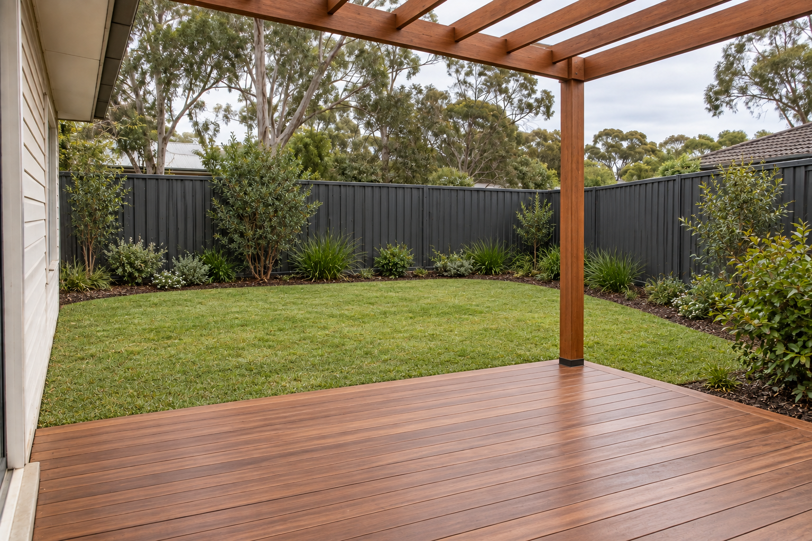
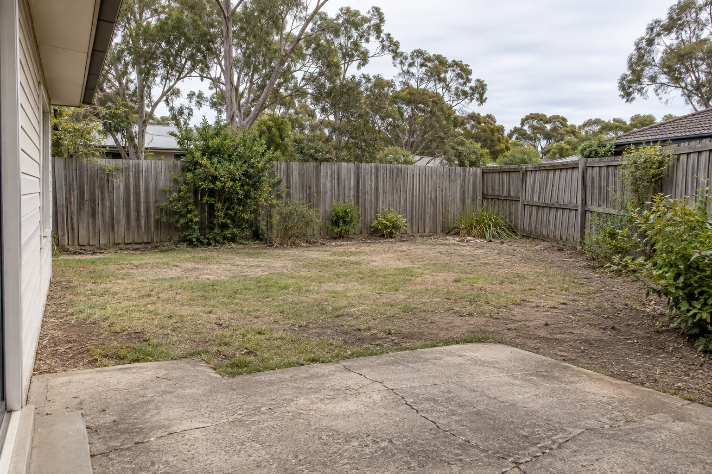
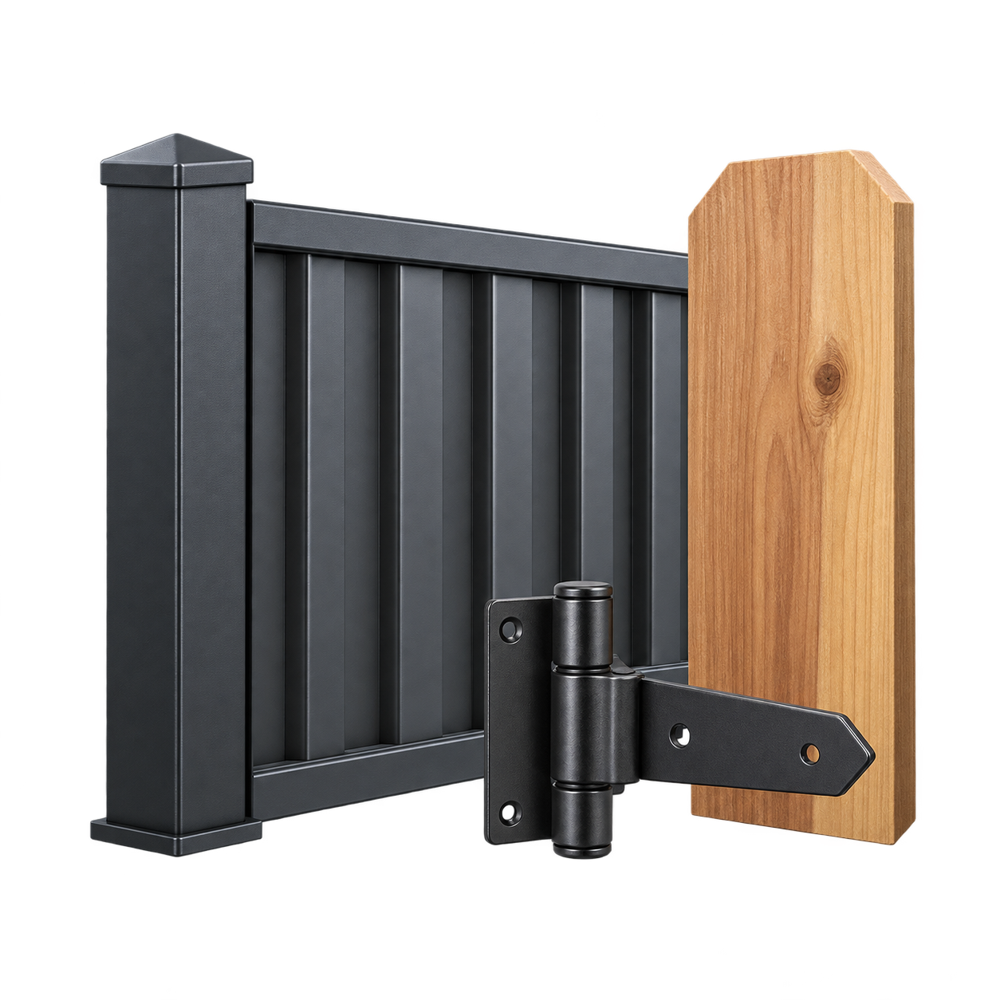
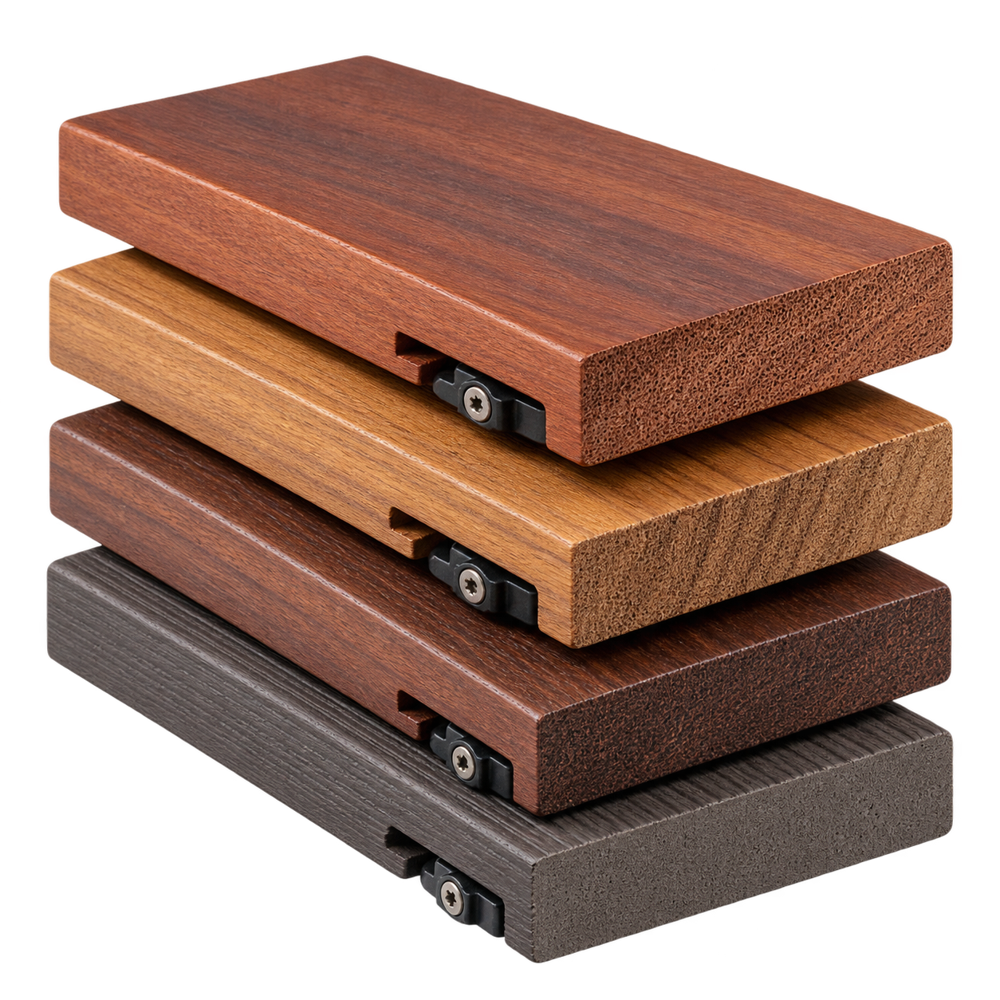
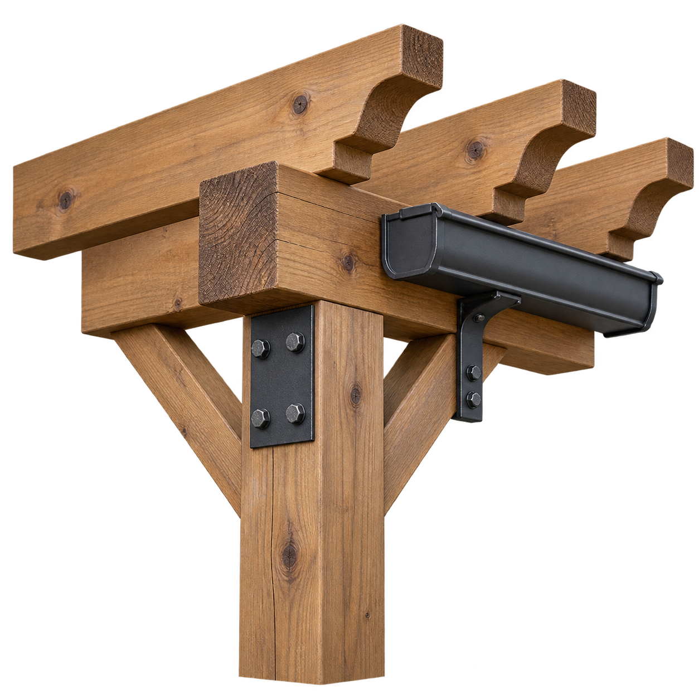

“The quote made the tricky boundary clear before work started. We knew what was being removed, where the new line sat and how the gate would open.”Sample homeowner feedback
Sydney metro · outdoor construction
Good bones.
Better outdoors.
Fences that hold the line. Decks that earn their weekends. Pergolas made for the Australian climate.
01measured plan
03outdoor trades
100%clear scope

FENCING✦DECKING✦PERGOLAS✦GATES✦
01 · Our point of view
Not showroom-perfect.
Backyard-ready.
For homeowners who want straight advice, tidy sites and outdoor work that feels like it belongs to the home.
Every quote begins with access, levels, measurements and materials—because the useful number is the one that matches your block.
How we price a job ↗02 · What we buildThree trades.
Three trades.
One tidy handover.
Each service has its own planning notes, material choices and quote checklist.
03 · Drag to compareOne block.
One block.
More living.
Choose a project, then drag the handle to compare the same viewpoint.

Before After04 · The client experienceThe details people
The details people
remember.
Illustrative testimonials for this fictional demo brand. These describe the kind of service a good outdoor build should deliver.
“The step down to the garden feels considered. It is the small level and edge details that made the deck feel like part of the house.”Sample homeowner feedback
“Shade in the afternoon was the whole reason for the project. The post positions kept the dining area open without blocking the garden.”Sample homeowner feedback
“We appreciated having the access plan and clean-up included in the scope. There were fewer surprises once the build began.”Sample homeowner feedback
05 · The processFrom phone photos
From phone photos
to final sweep.
A practical four-step flow gives clients enough certainty without pretending every block is the same.
- 0101–02 days
Send the shape of it
Upload photos, rough measurements, access notes and the material you like.
- 0245–60 min
On-site measure
We check levels, boundaries, services, drainage and build access before fixing the scope.
- 0303–05 days
Clear, itemised quote
Materials, preparation, removal, labour and assumptions are shown separately.
- 04Built to scope
Build & handover
Progress updates, a tidy site and one final walk-through before sign-off.
06 · Indicative pricing
Start with the
Start with the
right unit.
These 2026 Australian guide rates are starting points, not fixed offers. Site access, demolition, engineering, approvals and finish change the quote.

Boundary
Fencing
A clean line around the things that matter.
from$110/ linear metre
- Timber or Colorbond-style options
- Standard 1.8 m height
- Supply & install guide
Most considered

Living
Decking
A hardworking extension of the house.
from$320/ square metre
- Hardwood guide starting point
- Subframe & boards
- Ground-level access assumed

Shelter
Pergolas
Shade and structure without the guesswork.
typical$2k–12k/ project
- Open or roofed concepts
- Timber or aluminium
- Approval needs checked on site
All figures shown in AUD and are indicative demo content only. Final pricing requires an on-site quote.
07 · Quote builder
Show us the space.
Show us the space.
We’ll do the maths.
Rough measurements and phone photos are enough to start. This demo form works locally and does not send or store data.
TIP
Stand back far enough to show access, ground level and the full boundary or build area.
08 · Service areaAcross Sydney.
Across Sydney.
Block by block.
Illustrative coverage: Inner West, Eastern Suburbs, Lower North Shore and nearby metro suburbs.
Check your suburb ↗